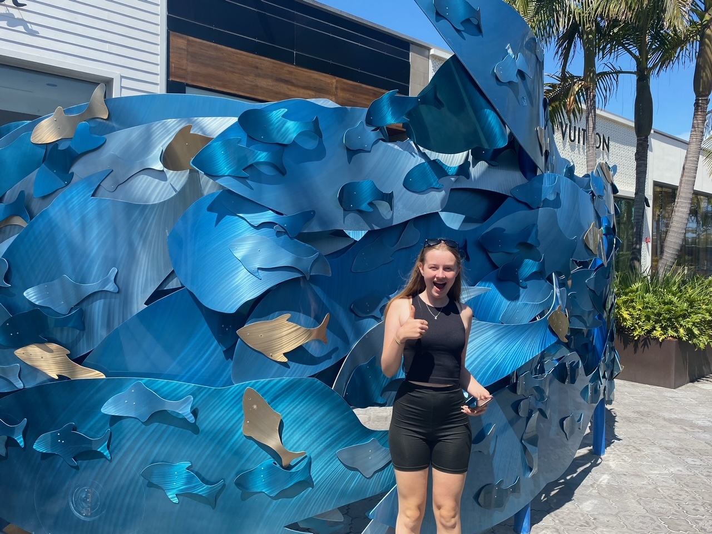

Our last full day was very chilled. We rolled out of bed throughout the morning and took it in turns to entertain Elliot, who had had a troublesome night. There had been talk of a trip to the Navy Exchange (NEX) in the morning, but Angie managed to get herself off to sleep at the same time as Elliot.
We had lunch, read and watched TV until it was time to go to UTC for the ice rink and some shopping. Jake stayed home for some more Elliot time and to play on his computer. We dropped Freya off at the rink, which was bigger and better than the rink in LA, but also busier. Me and Alison walked around the huge outdoor shopping centre nearby. It was mainly designer stuff and therefore expensive. We generally went straight for the sale and clearance racks and it was still pricey. I liked the Lucid car.

There were some sensible shops. After Freya got off the ice, she joined us and we looked in Forever 21, which was the last shop on her US list. We didn’t bother with Pottery Barn, which was on Alison’s list, as our suitcases will already be full.
The drive back was pretty horrendous with lane closures and rush hour traffic. We got back around the same time as Richard. Jake had a fun afternoon with Elliot, including squirting him in the face with a hosepipe, which Elliot didn’t like at first but still demanded “again”.
Angie took me and the kids to NEX, where military personnel can shop on the navy base tax-free. We decided the savings would be great on an iPhone. Angie drove us there purposefully and we went in the massive shop, like a huge Dixons and TK Maxx all rolled into one. We couldn’t find the iPhones, so Angie asked. It turns out that they haven’t done phones since 2016!
We took the opportunity to look at the clothes, Lego and perfume, then to the commissary (a massive supermarket) for some last day treats. We came back for Richard and Angie to make us pasta and garlic bread for our last meal. We sat around and chatted, drinking wine and beer then all had a relatively early night. We said goodbye to Richard as we weren’t getting up with him in the morning!